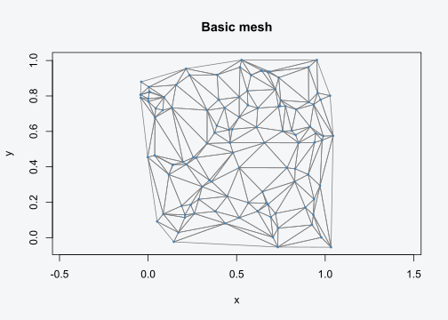
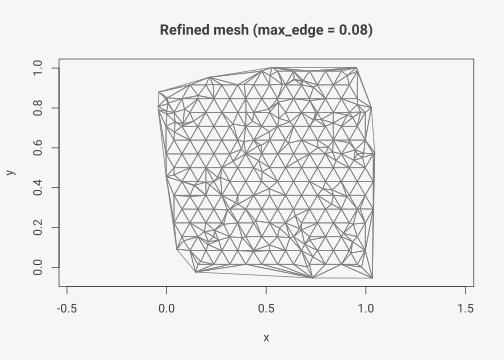
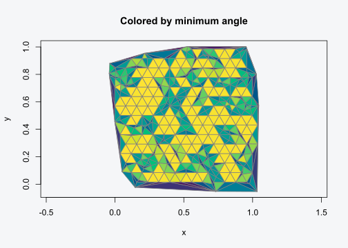

Your first mesh
tulpaMesh takes point coordinates and returns a triangulated mesh with FEM matrices ready for SPDE models.
set.seed(42)
coords <- cbind(x = runif(100), y = runif(100))
mesh <- tulpa_mesh(coords)
mesh
#> tulpa_mesh:
#> Vertices: 113
#> Triangles: 211
#> Edges: 323The mesh extends slightly beyond the convex hull of your points
(controlled by extend). Plot it:
plot(mesh, vertex_col = "steelblue", main = "Basic mesh")
Controlling mesh density
Use max_edge to add refinement points. The mesh
generator places a hexagonal lattice of points at this spacing,
producing near-equilateral triangles.
mesh_fine <- tulpa_mesh(coords, max_edge = 0.08)
mesh_fine
#> tulpa_mesh:
#> Vertices: 337
#> Triangles: 579
#> Edges: 875
plot(mesh_fine, main = "Refined mesh (max_edge = 0.08)")
Getting FEM matrices
fem_matrices() returns the three sparse matrices needed
for SPDE models:
C: mass matrix (consistent, symmetric positive definite)
G: stiffness matrix (symmetric, zero row sums)
A: projection matrix mapping mesh vertices to observation locations
fem <- fem_matrices(mesh_fine, obs_coords = coords)
dim(fem$C)
#> [1] 337 337
dim(fem$A)
#> [1] 100 337
# Verify key properties
all(Matrix::diag(fem$C) > 0) # positive diagonal
#> [1] FALSE
max(abs(Matrix::rowSums(fem$G))) # row sums ~ 0
#> [1] 2.842171e-14
range(Matrix::rowSums(fem$A)) # row sums = 1
#> [1] 1 1For the SPDE Q-builder, you typically need the lumped (diagonal) mass matrix:
fem_l <- fem_matrices(mesh_fine, obs_coords = coords, lumped = TRUE)
Matrix::isDiagonal(fem_l$C0)
#> [1] TRUEUsing a formula interface
If your coordinates live in a data.frame, use a formula:
df <- data.frame(lon = runif(50), lat = runif(50), y = rnorm(50))
mesh_f <- tulpa_mesh(~ lon + lat, data = df)
mesh_f
#> tulpa_mesh:
#> Vertices: 60
#> Triangles: 108
#> Edges: 167Mesh quality
Check triangle quality with mesh_quality() and
mesh_summary():
mesh_summary(mesh_fine)
#> Mesh quality summary (579 triangles):
#> Min angle: min=0.4 median=36.9 max=60.0 deg
#> Max angle: min=60.0 median=81.7 max=179.2 deg
#> Aspect ratio: min=1.00 median=1.22 max=9736.11 (1 = equilateral)
#> Area: min=2.36e-05 median=1.69e-03 max=1.51e-02
#> Warning: 118 triangles with min angle < 20 deg (20.4%)Color triangles by minimum angle:
plot(mesh_fine, color = "quality", main = "Colored by minimum angle")
Ruppert refinement
For guaranteed minimum angles, use min_angle:
mesh_r <- tulpa_mesh(coords, min_angle = 25, max_edge = 0.15)
mesh_summary(mesh_r)
#> Mesh quality summary (331 triangles):
#> Min angle: min=3.2 median=28.4 max=60.0 deg
#> Max angle: min=60.0 median=90.8 max=168.5 deg
#> Aspect ratio: min=1.00 median=1.48 max=51.82 (1 = equilateral)
#> Area: min=2.35e-05 median=2.60e-03 max=3.42e-02
#> Warning: 93 triangles with min angle < 20 deg (28.1%)Next steps
Spatial Workflows – boundary constraints, barrier models, sf integration
Spherical and Temporal Meshes – global meshes, space-time, metric graphs